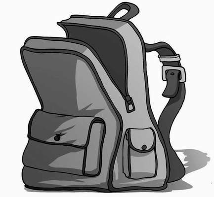

Lenny leant back against the wall behind the bike sheds with a sigh, pulling a packet of crisps from his pocket and opening it. ‘What do you reckon’s happened to The Gorilla?’ he asked through a mouthful of salt and vinegar.
‘He’s just decided he’s got better things to do than go to classes,’ replied James.
‘Well, we haven’t!’ said Alexander, checking his watch. ‘It’s already over halfway through English. We’ll get there in time to collect our homework if we set off now.’
Lenny glanced up at his friend. ‘Have you ever wondered why you get bullied so much?’ he asked, stuffing another handful of crisps into his mouth.
‘There’s no reason to victimise another pupil simply because they appreciate a solid education,’ claimed Alexander.
‘Well, Gordon Carver obviously thinks there is,’ said James. ‘That is, if he isn’t being torn limb from limb by vile, supernatural creatures at this very moment.’
Lenny sighed and threw his bag of crisps into a dustbin. ‘I’m never eating near you two again,’ he groaned.
‘Which brings us back to our current problem,’ said Alexander. ‘How are we going to get Whiskers into the sewer now?’
‘We can’t go back to Mr Wharpley’s workroom,’ answered James. ‘If he catches us in there again, he’ll be calling for the death penalty.’ He thought for a second. ‘There must be another way down there. Where’s that blueprint?’
‘In my locker,’ said Alexander.
Lenny and James peered over Alexander’s shoulders as he unrolled the plan of the old school, shielding the precious document from the other pupils who filled the corridors on their way to get lunch.
‘There!’ said James, pointing to a small, neatly drawn section to the left of the school. ‘That’s another opening into the sewers.’
Alexander slammed his locker door and led the way along the corridor to the area specified on the drawing. If this was indeed another entrance to the sewer system, he hoped it would be easier to access than the one down in the cellar.
‘It’s just outside what’s now the history classroom,’ he said, glancing briefly at the plan again. The sight of Alexander doing school work at lunchtime was nothing out of the ordinary, and so no one gave him a second glance.
‘Outside the history room?’ asked Lenny as they stepped out into the fresh air, and turned the corner. ‘Isn’t that…’
‘The staff car park!’ finished James glumly as the trio came to a halt. He dropped to his knees and studied the tarmac. He spotted another manhole cover—the entrance to the sewers they needed—currently lying underneath Mr Tick’s car.
‘What now?’ he asked.
‘Camping?’ repeated James’s dad that evening. ‘It’s a bit short notice, isn’t it?’
‘Well, it is Friday,’ explained James. ‘There’s no school tomorrow. We just thought we’d do something a bit different.’
‘Whose garden are you putting the tents up in?’ asked his mum. What was this? Quiz night?
‘We’re staying at Dave’s,’ James lied, as calmly as he could, wishing he had Alexander’s skill at telling untruths.
‘Dave?’ said his mum. ‘Who’s Dave?’
‘You know Dave!’ gushed James, wiping his already sweating palms on his trousers. ‘Tall lad, brown hair. Lives on Mire Street, near the school.’
‘I’m not sure that I—’ began his mum before being interrupted by his father.
‘He’s making friends!’ said his dad, proudly. ‘Not an easy task when you’ve just moved to a new area.’ He turned to face his son. ‘I’ll drop you off after tea,’ he promised, ruffling James’s hair.
James smiled sweetly. The family had only moved to Grimesford after his dad had lost his job, and now he was trying hard to make the transition as easy as possible for them. ‘Thanks, Dad,’ said James.
Two hours later, carrying a two-man tent and a rucksack filled with sandwiches and diet cola, James was dropped off at a house in Mire Street, down the road from St Sebastian’s. Lenny and Alexander were already there, in the front garden, waiting for him.
‘I think I’d better go and talk to the boy’s mother,’ said Mrs Simpson, as the car halted.
‘She’s, er…out shopping!’ exclaimed James quickly. ‘I’ll get her to give you a ring if she needs to speak to you!’ With that, he jumped out of the car, slammed the door and stood with Alexander and Lenny, waving frantically.
‘See you in the morning!’ he shouted, a little too enthusiastically. Shrugging, James’s mum nodded to his dad, and the car pulled away. The boys didn’t stop waving until it had turned the corner, and was out of sight.
‘I thought they’d never leave!’ sighed James.
Lenny nodded. ‘My dad was like that, too.’
‘My dad’s been on the phone all night to Gordon’s parents,’ said Alexander. ‘Gordon still hasn’t turned up. They were thinking of calling the police when I left.’
Behind him, the hall light of the house came on and the front door was jerked open by a grumpy-looking, middle-aged woman. ‘Who are you lot?’ she demanded.
Alexander smiled politely. ‘We’re Boy Scouts on the lookout for persons in need of our help.’
The woman growled. ‘Oh, yeah?’ she said. ‘And who do you think I am?’
‘That’s easy,’ replied James. ‘You’re Dave.’
As the sun began to disappear behind the science lab, the boys arrived at the school gates and swung them noiselessly open. Thank goodness Mr Wharpley had stuck to his usual habit of forgetting to lock them.
James led the way across the deserted car park, the beam of his torch cutting through the darkness. ‘There it is,’ he whispered, lighting up the manhole cover, now freed of the vehicle that had sat above it all day.
Kneeling, James and Alexander ran their fingers around the edge of the metal cover until they found places to grab hold. Straining against the weight, they lifted the cover off, revealing a pitch-black chasm below.
Lenny reached into his bag and carefully lifted out Whiskers, who seemed to be glad of the fresh air. He held the heavily made-up rat to his face and scratched it behind the ear.
James looked from Alexander to Lenny and back again. ‘Ready?’ he asked.
